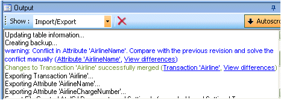

To import the changes between two versions created with Change Defender technology you will have to:

Notice than when importing you can create a Backup version to maintain the version status before importing so you can revert the operation.